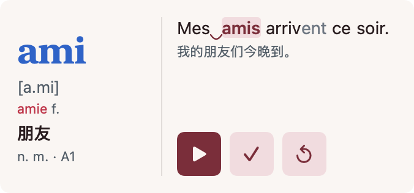

Mot Daily
French · 法语 · iPhone / iPad / Mac / Apple Watch

See grammatical gender, IPA and feminine forms when supplied. Annotated examples mark liaison connections and de-emphasize silent letters.
查看词的阴阳性、IPA 与已有的阴性形式；带标注的例句用弧线标出连诵，不发音字母降低亮度。
Free app with an optional one-time Pro purchase. 免费下载，可选一次性 Pro 内购。